Префектура Киото · Киото · история
Замок Нидзё: где сёгуны принимали императора и где закончилась их эпоха
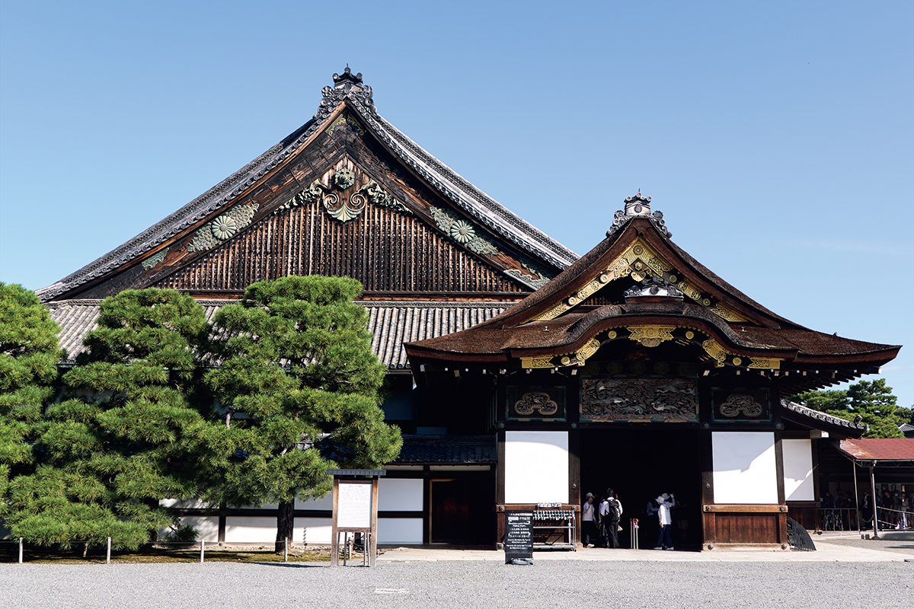
Замок Нидзё построили сёгуны Токугава, чтобы показать свою силу в городе императора. Здесь они с невиданной пышностью принимали императора, и здесь же через два с половиной века объявили, что возвращают ему власть.
История
Замок, который видел начало и конец сёгуната
Замок Нидзё заложил Иэясу Токугава (1543–1616), полководец, который выиграл битву при Сэкигахаре в 1600 году и стал первым сёгуном из рода Токугава. В 1601 году он обязал князей западной Японии строить замок, а в 1603 году въехал в него. Получив титул сёгуна в замке Фусими, Иэясу отправился в императорский дворец благодарить именно из Нидзё.
Замок в столице не был крепостью для войны. Это была сцена для церемоний между сёгунатом и императорским двором. Сёгуна, главу военного правительства, назначал император, а сёгунат, в свою очередь, содержал двор деньгами. Здесь Иэясу и его сын Хидэтада праздновали назначение сёгунами, отсюда Иэясу выступал в 1614 и 1615 годах в походы на Осаку, а после победы в замке давали спектакли но. Так Нидзё стал символом власти Токугава над Киото.
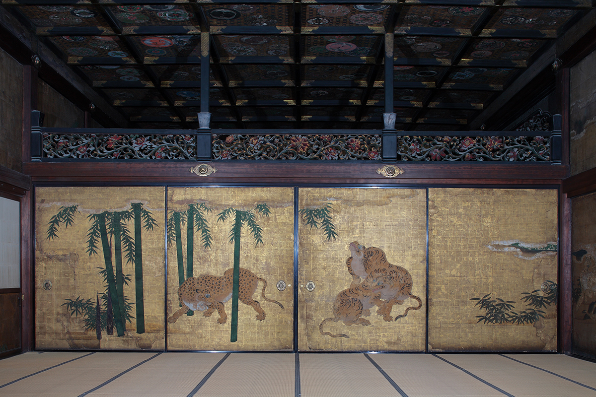
Через два с половиной века тот же замок увидел конец эпохи. После прихода «чёрных кораблей» американского флота в 1853 году авторитет сёгуната падал, страну раскачивали призывы чтить императора и изгнать иностранцев. В 10-м месяце 1867 года пятнадцатый и последний сёгун Ёсинобу Токугава (1837–1913) объявил здесь собравшимся в Киото вельможам, что возвращает власть императору. Это решение, «Тайсэй хокан», завершило правление сёгунов, длившееся больше 260 лет, и открыло дорогу современному государству во главе с императором.
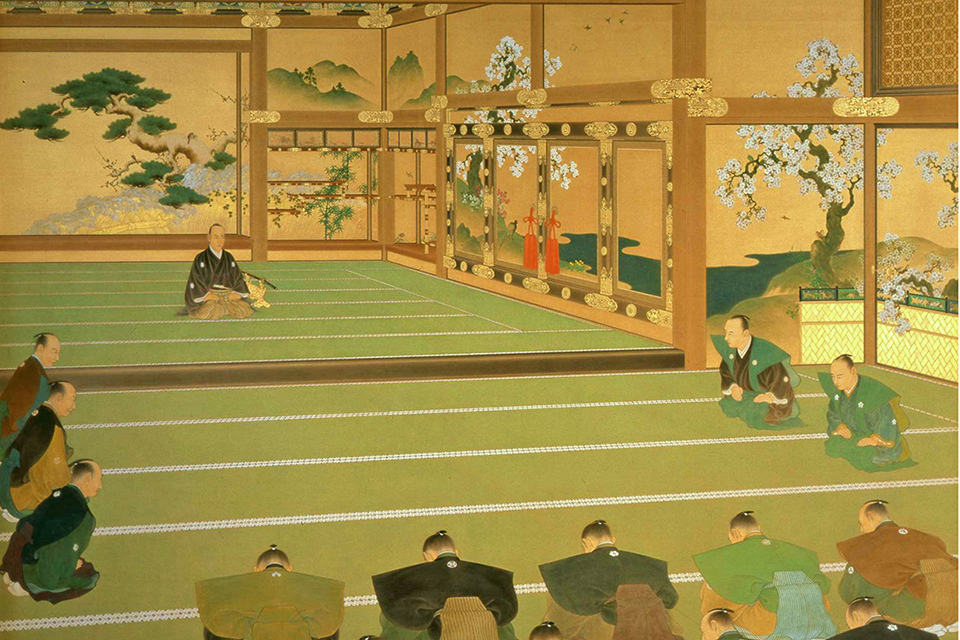
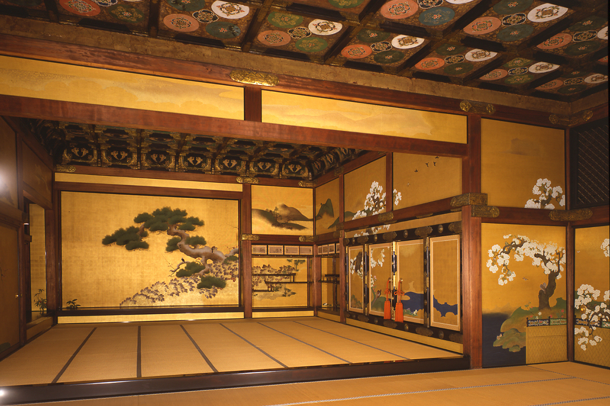
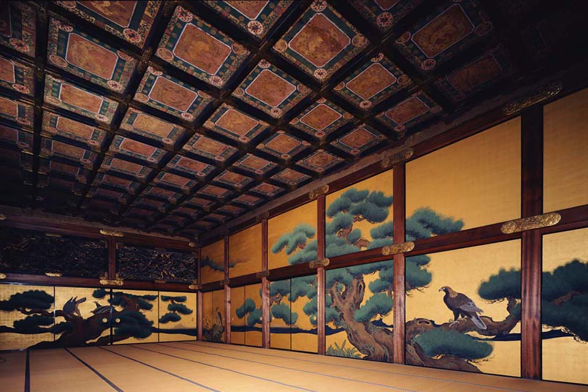
Император
Го-Мидзуноо, ради которого перестроили замок
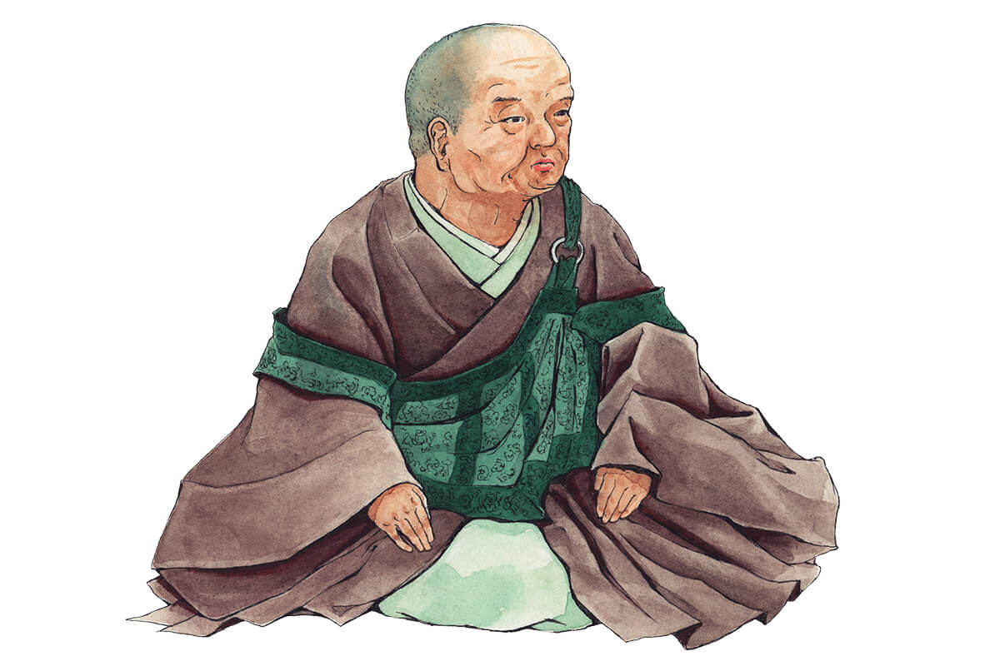
Го-Мидзуноо жил одновременно с тремя первыми сёгунами Токугава и даже появляется на знаменитых ширмах «Ракутю ракугай-дзу» с видами Киото. Сёгунат в те годы стремился поставить двор под контроль: издал свод правил для императорского двора и аристократов. Второй сёгун Хидэтада Токугава (1579–1632) пошёл дальше и выдал за императора свою дочь Масако Токугаву (1607–1678), которая стала императрицей. Расчёт был ясен: влить кровь Токугава в императорский род и сохранить влияние. Символом союза двора и сёгуната и должен был стать торжественный визит императора в замок, «Канъэй гёко».
Перестройка
Как замок стал в полтора раза больше
Говорят, ради этого визита Токугава увеличили территорию замка примерно в полтора раза. В 1624 году Хидэтада, уже передавший титул сёгуна сыну и правивший как отставной сёгун, начал большую перестройку. Замок расширили на запад и поставили новую цитадель Хоммару с резиденцией для самого Хидэтады. Дворец Ниномару переделали для третьего сёгуна Иэмицу Токугавы (1604–1651), а к югу от сада Ниномару построили три дворца: для императора, для императрицы Масако и для матери императора. Цитадель Хоммару встала к западу от Ниномару, а главная башня в её юго-западном углу. От Ниномару к воротам Хоммару вёл двухэтажный крытый мост, и император, по преданию, прошёл к башне по устланной татами галерее второго этажа, ни разу не ступив на землю.
Все дворцы украсили росписями мастера школы Кано, придворные художники сёгуната. «Дворцы строили специально ради визита. Работами руководили Энсю Кобори и другие распорядители строительства вместе с семьёй Накаи, главными плотниками Киото», рассказывает глава оргкомитета юбилейного фестиваля 2026 года. Сёгунат готовил сцену, на которой его власть должна была выглядеть безупречно.
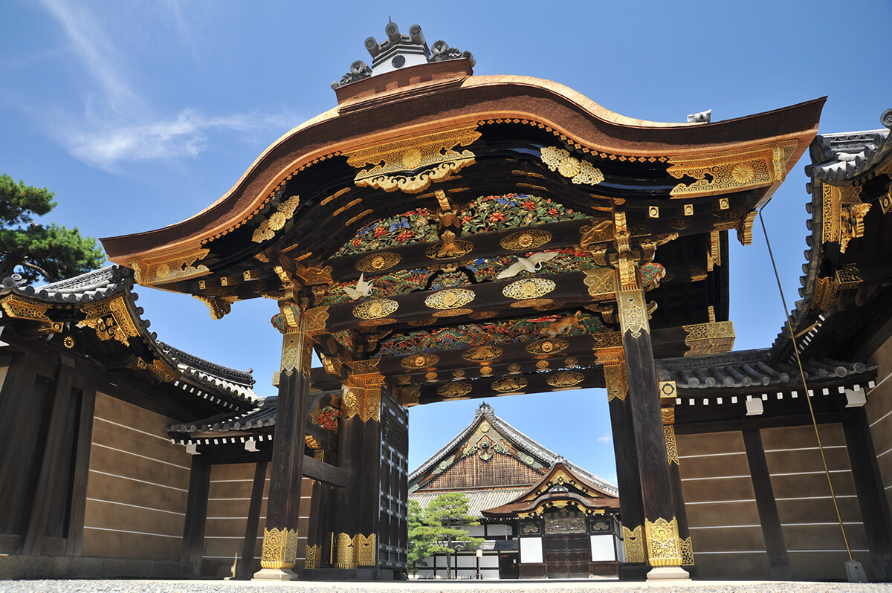
Энсю Кобори (1579–1647), князь, вассал Токугава, сегодня больше известен как мастер чайной церемонии и садов. Он заново выложил камни в саду Ниномару, чтобы сад смотрелся с трёх сторон: из зала Охироба на востоке, из Куро-сёина на севере и из дворца для императора на юге.
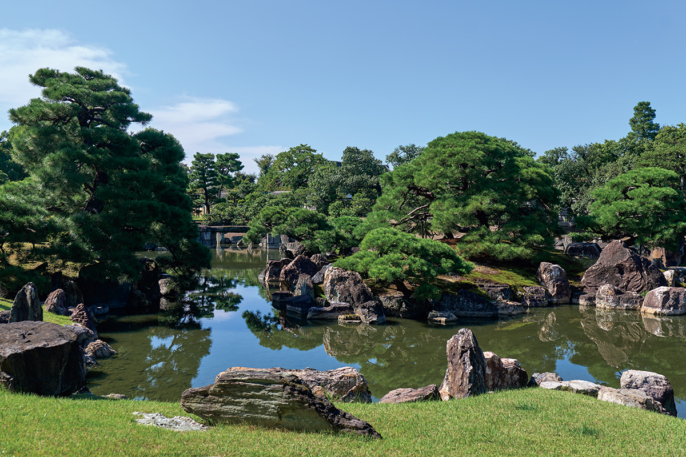
Во дворце Ниномару около 3600 расписанных панелей. Самая впечатляющая роспись, «Сосна» в первом зале Охироба, приписывается Танъю Кано (1602–1674), которому тогда было 24 года и который уже возглавлял школу Кано. Ветви сосны тянутся до самого потолка, и сёгун на её фоне выглядел ещё значительнее.
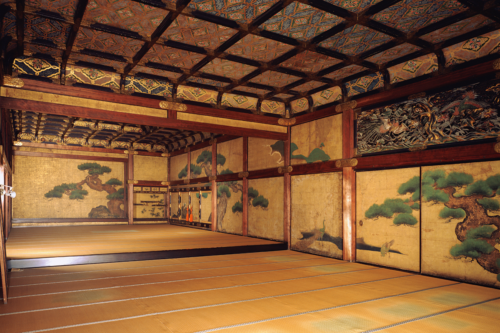
1626
Пять дней «Канъэй гёко»
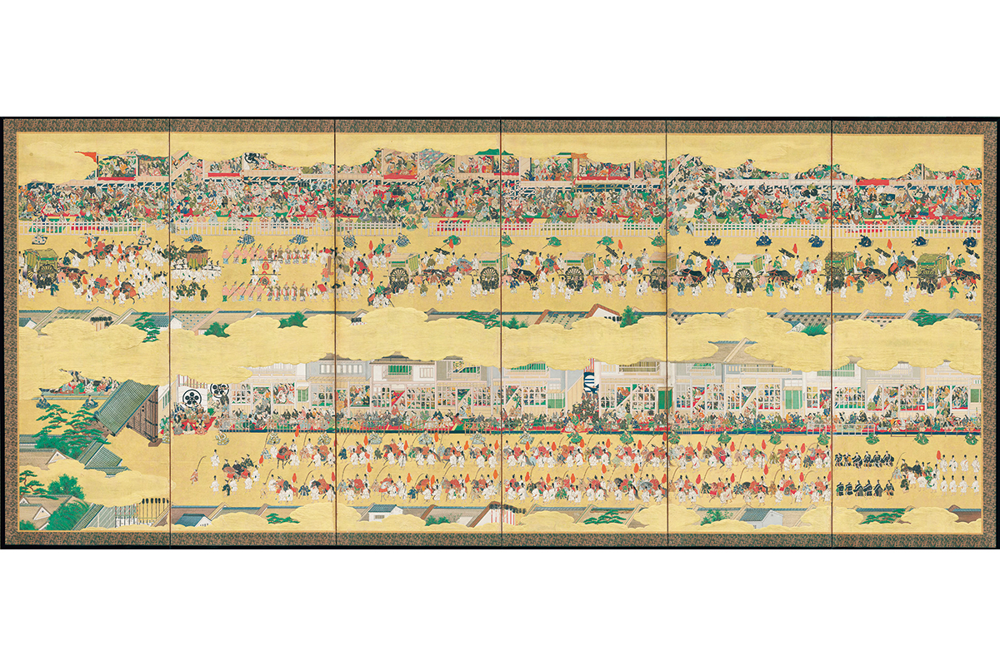
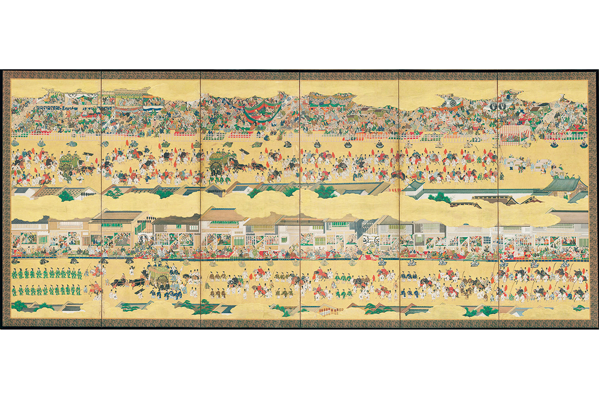
В 6-й день 9-го месяца 1626 года по лунному календарю император Го-Мидзуноо по приглашению Хидэтады и Иэмицу отправился в замок Нидзё. Такого шествия столица ещё не видела: придворные и музыканты императора, князья со всей страны в свите двух сёгунов, всего около 9000 человек. Зрители теснились вдоль всей дороги.
«Подготовка, видимо, заняла несколько лет. В Киото стекались люди и товары, оживилась торговля и, конечно, обмен между разными культурами», говорит глава оргкомитета.
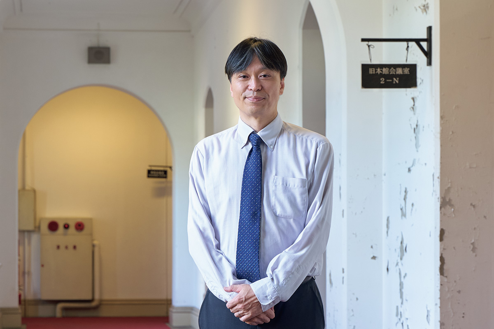
«Это было событие, за которым следила вся Япония. О нём писали даже иностранцы, например купцы Ост-Индской компании, бывшие тогда в стране»
глава оргкомитета фестиваля
Шествие первого дня шло до вечера, а в замке императора ждал церемониальный пир. Дальше каждый день был расписан. Во второй день смотрели придворные танцы бугаку, в третий выездку лошадей, слушали придворную музыку и слагали стихи вака. Четвёртый день отдали театру но: его играли целый день на сцене, поставленной в углу сада Ниномару. В последний, пятый день императору подали праздничный пир, Иэмицу подарил ему десять коней, а Хидэтада пять, и император вернулся во дворец. За эти дни сёгуны поднесли императору, императрице и придворным огромное количество даров.
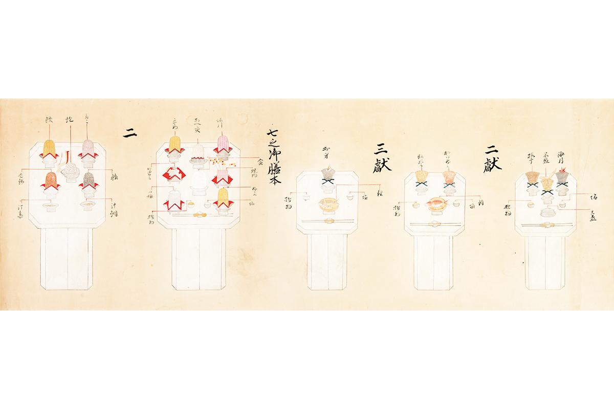
Гостей угощали «хондзэн-рёри»: каждому ставили по несколько подносов. Этот стиль сложился из церемониальных пиров древнего двора и техники буддийской постной кухни и стал главной самурайской кухней для почётных гостей. Для пиров собрали поваров и двора, и сёгуната, а золотую и серебряную посуду изготовили специально. Считается, что ничего роскошнее в те века не подавали.
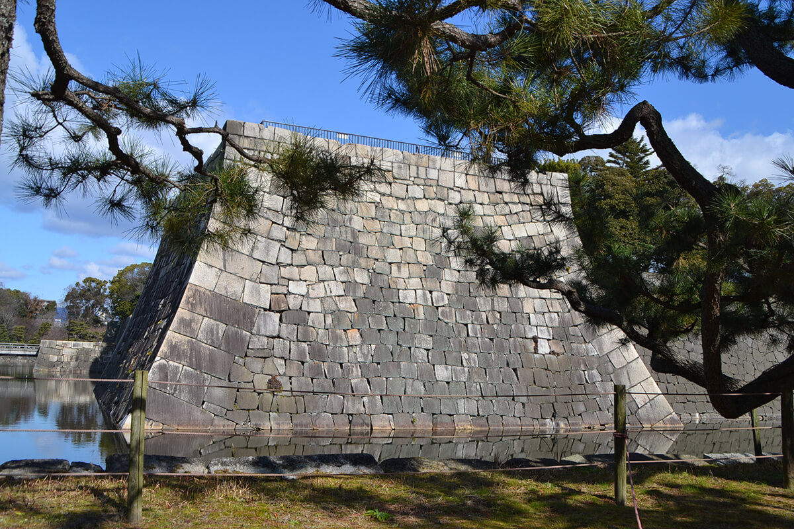
Надежды Токугава на родство с императорами не сбылись: Масако родила двух сыновей, но оба умерли в детстве. Когда власть сёгуната из Эдо окрепла, ездить в Киото стало незачем. После визита Иэмицу в 1634 году ни один сёгун не появлялся в Нидзё до 14-го сёгуна Иэмоти Токугавы в конце эпохи Эдо. Замок за это время пострадал от молний и землетрясений.
В 2026 году, к 400-летию визита, префектура Киото устроила фестиваль «Канъэй гёко ёнхякунэн-сай». Главным событием назначили реконструкцию шествия 6 декабря 2026 года.
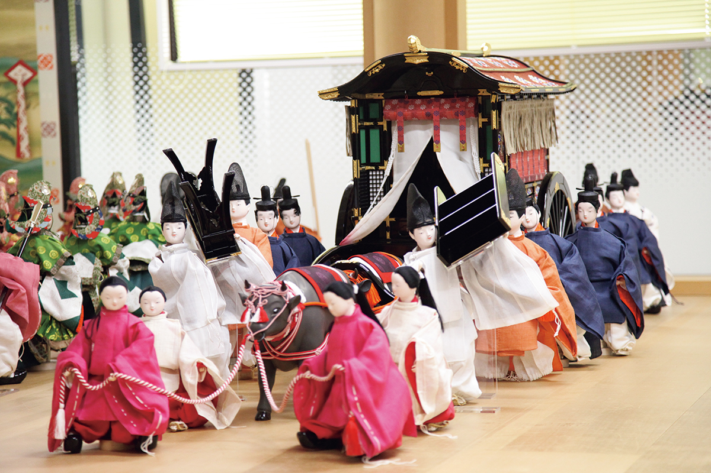
После сёгунов
Императорская вилла и открытый замок
Когда Ёсинобу покинул замок, здесь разместился Дайдзёкан-дай, временное правительство, прообраз нынешнего кабинета министров. Замок посещал император Мэйдзи, одно время его даже хотели сделать временным императорским дворцом, но вскоре император переехал в Токио, и Киото перестал быть столицей. В 1871 году в замке устроили управление префектуры Киото.
В 1884 году замок стал императорской виллой Нидзё, и его перестроили под новый статус. Город тем временем оживал: провели канал от озера Бива, пустили электрический трамвай. Самым большим событием виллы стала коронация императора Тайсё в 1915 году: к северу от дворца Ниномару построили зал для пиров, а дворец служил комнатами ожидания для императора и гостей. Зал вскоре разобрали, на его месте сегодня сад Сэйрюэн.
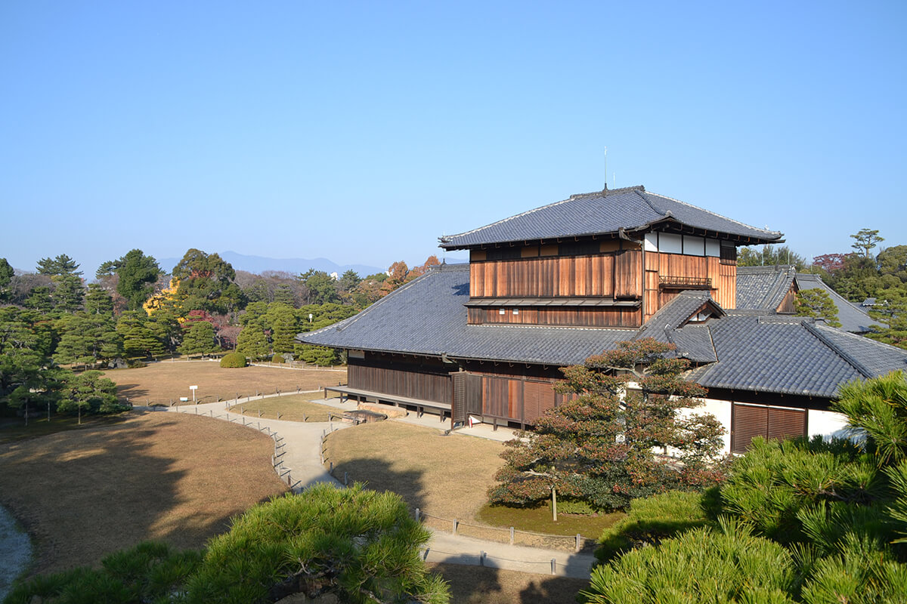
В 1939 году министерство императорского двора передало виллу городу Киото, и с 1940 года замок открыт для всех.
Замок Нидзё
- Адрес
- префектура Киото, город Киото, район Накагё, Нидзёдзё-тё, 541
- Телефон
- +81 75-841-0096
- Часы работы
- 8:45–16:00 (последний вход), замок закрывается в 17:00; в сентябре с 8:00
- Выходные
- 29–31 декабря; у дворца Ниномару бывают отдельные выходные
- Цены / Вход
- взрослые 1030 иен (с дворцом Ниномару), старшеклассники и средняя школа 350 иен, начальная школа 200 иен; хранилище экспонатов 200 иен
Фото: Марико Тая.